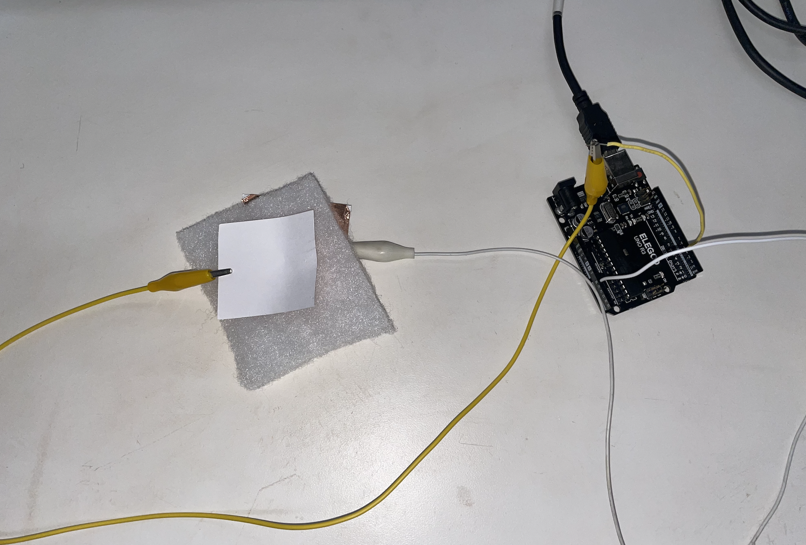
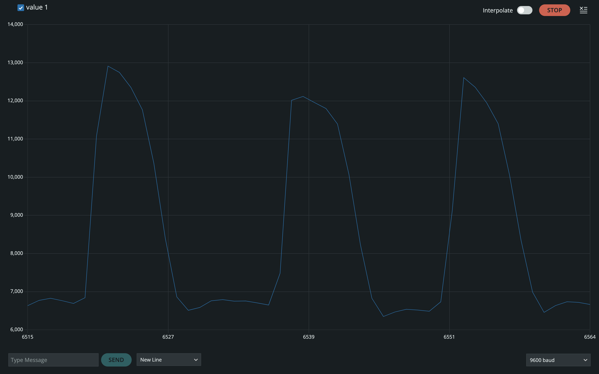

/week 6: electronic input devices
# capacitive sensor
# ---------------------------------
For my capacitive sensor, I made a scale/pressure sensor/"high when it's together low when it's apart" sensor. Allow me to explain.
The code originally was to spit out some arbitrary value that will be high when the plates are near each other and low when they are apart, hence the "high when it's together, low when it's apart" sensor, as Bobby so eloquently coined. Then, Bobby informed be that putting a buffer (in this case a piece of cotton) in between the two plates, I would 1) get a much more consistent reading and 2) be able to call this something other than a "high when it's together, low when it's apart" sensor, such as a scale or pressure sensor.

The results on the serial plotter:

The code:
int tx_pin = 4;
int rx_pin = A0;
int read_high;
int read_low;
int read_result;
int N_samples = 100;
int sum;
void setup() {
pinMode(tx_pin, OUTPUT);
Serial.begin(9600);
}
void loop() {
sum = 0;
for (int i=0; i < N_samples; i++) {
digitalWrite(tx_pin, HIGH);
read_high = analogRead(rx_pin);
digitalWrite(tx_pin, LOW);
read_low = analogRead(rx_pin);
read_result = read_high - read_low;
sum += read_result;
}
Serial.println(sum);
}
# Hall effect
# ---------------------------------
As part of my final project, I need to track the amount of rotations the motor crank completes. Instead of using an encoder to track the motor's rotations, I decided to make my own rotation tracker with a Hall effect sensor, magnet, and a little bit of pixie dust.
The hardware setup was quite simple: all I had to do was put the Hall effect in a fixed position and the magnet in a dynamic position. Or, I could've done vice versa, but the wiring of the Hall effect sensor would not have been conducive to moving around. I taped the Hall effect sensor to the body of the DC Motor and taped the magnet to the crank arm. That way, whenever the crank will complete a rotation, the magnet will pass by the Hall effect sensor once.
Unfortunately, I didn't take any pictures of this in action, but Week 9 displays the functionality.
// Define the pin for the Hall effect sensor
const int hallPin = 14; // GPIO pin connected to AH1815 output
volatile int rotationCount = 0; // Variable to store the count of rotations
unsigned long lastDebounceTime = 0; // Last time a pulse was counted
const unsigned long debounceDelay = 200; // Minimum delay time in milliseconds between pulses
void setup() {
Serial.begin(115200); // Initialize serial communication at 115200 baud for ESP32
pinMode(hallPin, INPUT); // Set the hallPin as an input
attachInterrupt(digitalPinToInterrupt(hallPin), countRotation, FALLING); // Trigger on FALLING edge
}
void loop() {
// Display the rotation count
Serial.print("Rotations: ");
Serial.println(rotationCount);
delay(500); // Update every half second
}
// Interrupt Service Routine to count rotations
void countRotation() {
unsigned long currentTime = millis(); // Current time in milliseconds
// Check if the debounce time has passed
if ((currentTime - lastDebounceTime) > debounceDelay) {
rotationCount++; // Increment rotation count
lastDebounceTime = currentTime; // Update last debounce time
}
}